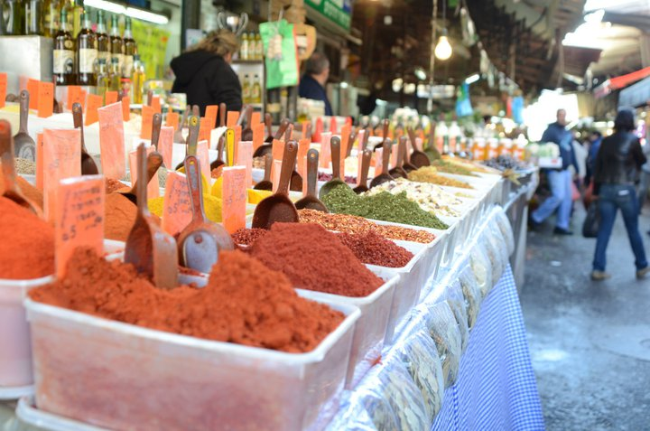
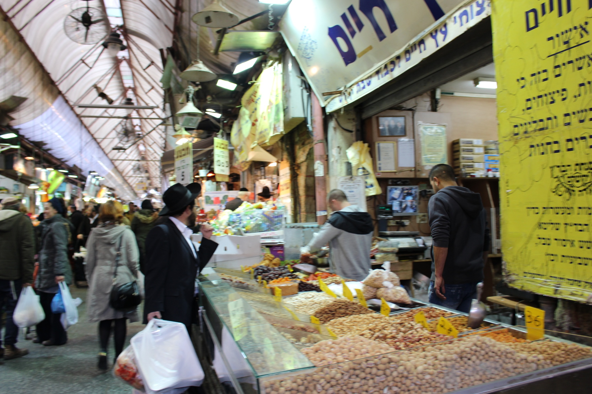
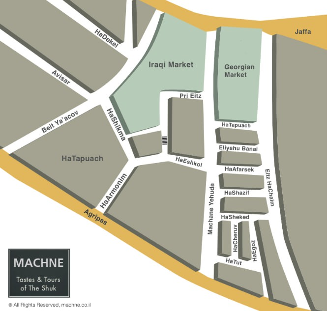

בס"ד
Shuk Machane Yehuda
Mahane Yehuda Market, often referred to as "The Shuk", is a marketplace (originally open-air, but now partially
covered) in Jerusalem.
Popular with locals and tourists alike, the market's more than 250 vendors sell fresh fruits and vegetables;
baked goods; fish, meat and cheeses; nuts, seeds, and spices; wines and liquors; clothing and shoes; and
housewares, textiles, and Judaica.
In and around the market are falafel, shawarma, kibbeh, kebab, shashlik, kanafeh, baklava, halva, zalabiya and
Jerusalem mixed grill stands, juice bars, cafes, and restaurants.
The color and bustle of the marketplace is accentuated by vendors who call out their prices to passersby.
On Thursdays and Fridays, the marketplace is filled with shoppers stocking up for Shabbat, until the Friday
afternoon sounding of the bugle that signifies the market will close for the Sabbath.
In recent years, the 'shuk' has emerged as another Jerusalemic nightlife center, with restaurants, bars and live
music.
Geography
Mahane Yehuda market is bounded by Jaffa Road to the north, Agrippas Street to the south, Beit Yaakov Street to the west, and Kiach Street to the east.
The market itself has two major streets: Eitz Chaim Street (the covered market) and Mahane Yehuda Street (the open-air market).
Bisecting these two streets are smaller streets that all used to be named for fruits and nuts—Afarsek (Peach) Street, Agas (Pear) Street, Egoz (Walnut) Street, Shaked (Almond) Street, Shezif (Plum) Street, Tapuach (Apple) Street, and Tut (Berry) Street—until the municipality changed the name of Agas St. to Yaakov Eliyahu Banai St.
History
In 1887 the neighborhood of Mahane Yehuda was established on the north side of Jaffa Road. It was founded by three business partners—Johannes Frutiger (a German Protestant and owner of the largest bank in Palestine), Shalom Konstrum, and Joseph Navon—and was named after Navon's brother, Yehuda.
On the south side of the street to the west stood another neighborhood, Beit Ya'akov, founded in 1885.
At the end of the 19th century, a marketplace was established on an empty lot to the east of Beit Ya'akov and across the road from Mahane Yehuda which was owned by the Sephardi Valero family;
this market was known as Shuk Beit Yaakov (Beit Yaakov Market).
Here Arab merchants and fellaheen sold their goods to the residents who lived outside the Old City.
As the new neighborhoods outside the Old City grew, the Beit Yaakov Market grew apace with more stalls, tents and pavilions.
Under Ottoman rule, the market expanded haphazardly and sanitary conditions worsened. The Etz Chaim Yeshiva opened a few shops in the market, using the rent income to help fund the yeshiva.
In the late 1920s, the British Mandate authorities cleared out all the merchants and built permanent stalls and roofing.
Afterwards the market began to be known as the Mahane Yehuda Market, after the larger neighborhood.
In 1931 a new section was built to the west of the market by 20 traders, who previously had only temporary wooden stalls in the area. It was later named the Iraqi Market, as many traders of Iraqi Jewish descent acquired shops there.
Today the Iraqi Market is located off Mahane Yehuda Street.
A halvah seller arranges his wares.
In the 2000s, major renovations were made to the Mahane Yehuda Market, including infrastructure work, repaving roads and covering some open areas.
The market's Board of Directors worked to make at least some of these changes in response to a decrease in visitors after terrorist attacks in 1997 and 2002 killed 23 people.
Changes driven by the Board included renovations to the streets and alleyways, but also included efforts to draw in cafes and boutiques that would entice more middle-class customers who might become frequent shoppers.
According to Eli Mizrachi, chairman of the Mahane Yehuda Merchants Association, whereas shoppers used to come to buy produce, the "new generation" wants a place with entertainment, a place to sit and have a cup of coffee, and a place to shop for gifts.
In the mid-2000s, Ethiopian food sellers began to appear in and around the market.
In addition, a number of "trendy shops and cafés" began appearing among the market's retail stalls.
New "non-Middle Eastern" restaurants include eateries such as "Pasta Basta," specializing in Italian pasta dishes,"Fish and Chips," described by one guide book as "the only fish and chips bar in Jerusalem,"and "Ha'Agas 1," a vegetarian restaurant.
Other recent additions to the market's stalls include an espresso bar, "hip jewelry" stores, and designer clothing "boutiques".Three new designer clothing stores opened in 2007 alone.
Bread and pita vendo
Changes in the market have transformed the area into a "night spot," with bars featuring specialty drinks, live music, and singers.
The change has been so pronounced that a Jerusalem Post article listed one shuk restaurant as one of the five highest-rated restaurants in the city for romantic dates.
The shuk also now hosts special events like the "Balabasta" dance and music festival, launched in 2010, which attracts large crowds that remain until late at night, in areas that used to be deserted.
The annual festival includes street performances, artwork, puppet shows, and events linked to the market's foods, such as chili-eating contests and produce-carving workshops.
While some supporters of changes to the market claim that the revitalized shuk has actually helped to revitalize the whole city, others are less enthusiastic about the changes, noting that real estate prices have quadrupled since the 2000s, forcing out many older shops (like vegetable and fish shops) that were staples of the market.
They fear that the arrival of chain stores is "part of a global phenomenon that may erase local culture.
Mahane Yehuda market is bounded by Jaffa Road to the north, Agrippas Street to the south, Beit Yaakov Street to the west, and Kiach Street to the east.
The market itself has two major streets: Eitz Chaim Street (the covered market) and Mahane Yehuda Street (the open-air market).
Bisecting these two streets are smaller streets that all used to be named for fruits and nuts—Afarsek (Peach) Street, Agas (Pear) Street, Egoz (Walnut) Street, Shaked (Almond) Street, Shezif (Plum) Street, Tapuach (Apple) Street, and Tut (Berry) Street—until the municipality changed the name of Agas St. to Yaakov Eliyahu Banai St.
History
In 1887 the neighborhood of Mahane Yehuda was established on the north side of Jaffa Road. It was founded by three business partners—Johannes Frutiger (a German Protestant and owner of the largest bank in Palestine), Shalom Konstrum, and Joseph Navon—and was named after Navon's brother, Yehuda.
On the south side of the street to the west stood another neighborhood, Beit Ya'akov, founded in 1885.
At the end of the 19th century, a marketplace was established on an empty lot to the east of Beit Ya'akov and across the road from Mahane Yehuda which was owned by the Sephardi Valero family;
this market was known as Shuk Beit Yaakov (Beit Yaakov Market).
Here Arab merchants and fellaheen sold their goods to the residents who lived outside the Old City.
As the new neighborhoods outside the Old City grew, the Beit Yaakov Market grew apace with more stalls, tents and pavilions.
Under Ottoman rule, the market expanded haphazardly and sanitary conditions worsened. The Etz Chaim Yeshiva opened a few shops in the market, using the rent income to help fund the yeshiva.
In the late 1920s, the British Mandate authorities cleared out all the merchants and built permanent stalls and roofing.
Afterwards the market began to be known as the Mahane Yehuda Market, after the larger neighborhood.
In 1931 a new section was built to the west of the market by 20 traders, who previously had only temporary wooden stalls in the area. It was later named the Iraqi Market, as many traders of Iraqi Jewish descent acquired shops there.
Today the Iraqi Market is located off Mahane Yehuda Street.
A halvah seller arranges his wares.
In the 2000s, major renovations were made to the Mahane Yehuda Market, including infrastructure work, repaving roads and covering some open areas.
The market's Board of Directors worked to make at least some of these changes in response to a decrease in visitors after terrorist attacks in 1997 and 2002 killed 23 people.
Changes driven by the Board included renovations to the streets and alleyways, but also included efforts to draw in cafes and boutiques that would entice more middle-class customers who might become frequent shoppers.
According to Eli Mizrachi, chairman of the Mahane Yehuda Merchants Association, whereas shoppers used to come to buy produce, the "new generation" wants a place with entertainment, a place to sit and have a cup of coffee, and a place to shop for gifts.
In the mid-2000s, Ethiopian food sellers began to appear in and around the market.
In addition, a number of "trendy shops and cafés" began appearing among the market's retail stalls.
New "non-Middle Eastern" restaurants include eateries such as "Pasta Basta," specializing in Italian pasta dishes,"Fish and Chips," described by one guide book as "the only fish and chips bar in Jerusalem,"and "Ha'Agas 1," a vegetarian restaurant.
Other recent additions to the market's stalls include an espresso bar, "hip jewelry" stores, and designer clothing "boutiques".Three new designer clothing stores opened in 2007 alone.
Bread and pita vendo
More info
Back to main site


